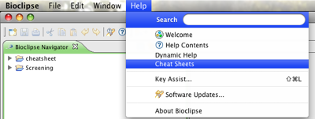
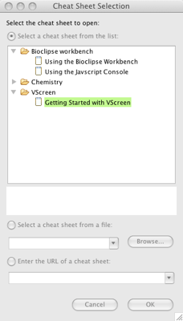
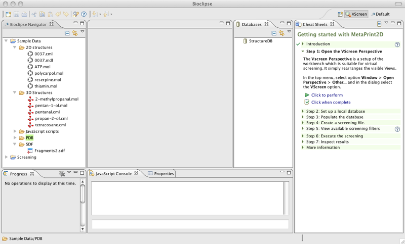
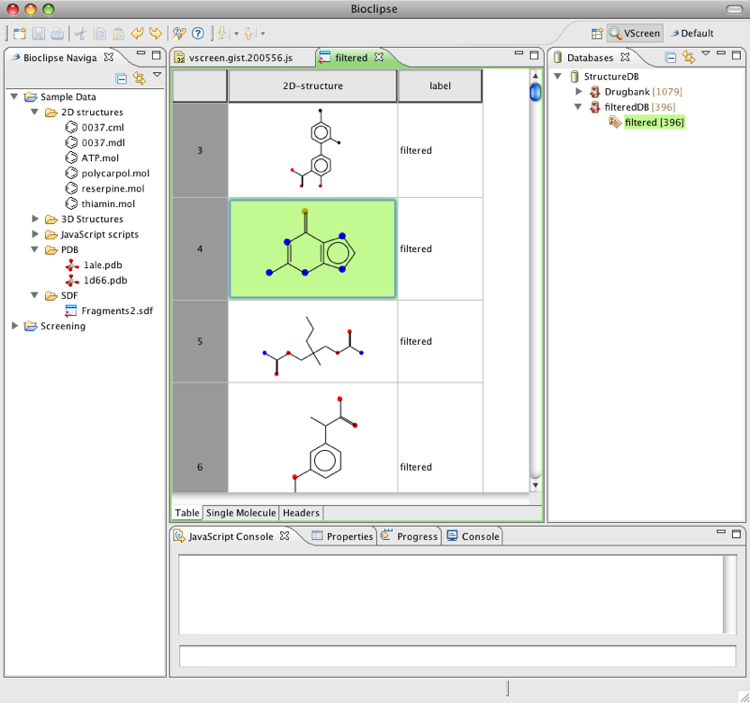

VScreen User Guide
Installation
Vscreen is a set of plugins for Bioclipse. There are two ways to obtain a Bioclipse-VScreen package:
Download a pre-built Bioclipse-StructureDB-VScreen package
Please see links available from the
StructureDB packages page.
Download Bioclipse and use the software update option
This guarantees the latest version of Bioclipse, StructureDB, and VScreen.
Bioclipse is available from www.bioclipse.net,
see the installation page for more information.
After installing Bioclipse, start it and go to the menu Help > Software Updates.
Check StructureDB and VScreen, and after restart you have the features installed.
Interactive tutorial
It is recommended for the user to follow the VScreen Cheat sheet, which is an interactive tutorial.
It can be found under the menu Help > Cheat Sheets....

The menu to see the available cheat sheets.

The available cheat sheets showing the VScreen cheat sheet highlighted.
A recommended start is to open the VScreen Perspective, available from the menu Window > Open Perspective > other > VScreen.

This is how the Bioclispe workbench looks like with the VScreen perspective active and the VScreen Cheat Sheet open.
The cheat sheet provides means to step through the actions needed to filter a small chemical database. We encourage you to give it a try!

Inspecting the results after a virtual screening in the MoleculesTable of Bioclipse.
More information
Bioclipse has an extensive Help system available from the menu Help > Help Contents.
Here you can read about how to set up new Bioclipse Projects, import data, and use one of the graphical editors.
There are also several other cheat sheets which provide introduction to the many features of Bioclipse.